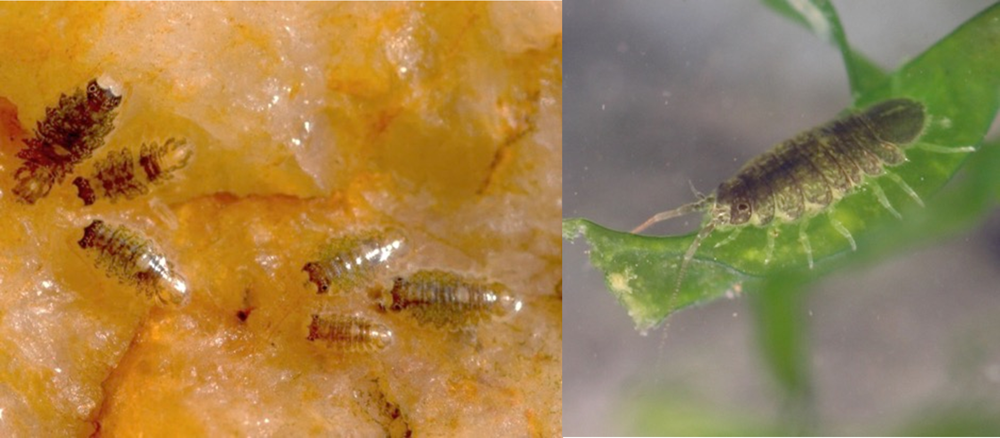
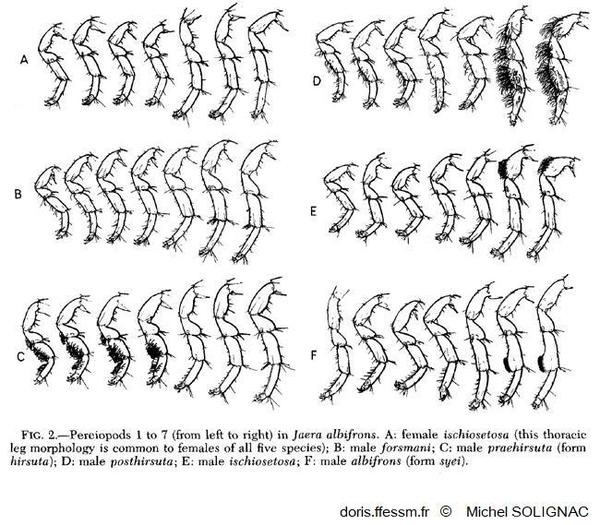

Sexisol Details

(Image credits: W. Thomas and T. Broquet)
Evolution of Sexual Isolation
Speciation is the process during which barriers to reproduction appear and become associated between
groups of individuals until they become unable to reproduce. The nature of barriers involved in gene flow are
numerous and diverse (Coyne and
Orr, 2004). One barrier that is supposed to have played a major role in the diversification of animals and
plants is sexual isolation (Shaw
et al., 2024). This barrier regroups both behavioural sexual isolation or the lack of sexual
attraction between groups of individuals and gametic barriers to gene flow, such as gametic incompatibilities,
or gametic competition. However, it is not well known how sexual isolating barriers appear and evolve to form
different species. Recent advances in sequencing techniques also allow us to look at the genomic bases of
reproductive barriers, investigate the role of Structural Variants (SVs) and how they can be coupled with other
reproductive barriers to lead to complete reproductive isolation between groups of individuals.
The questions of this project are thus: how did sexual isolation appear and evolve? What is the role of SVs in
the role of sexual isolation?
To answer this question, we will use the complex of marine isopods Jaera albifrons. It is a complex of 5
closely-related species living on the shore. They can be found under rocks or on algea in the intertidal part of
the shore. 4 of the 5 species of this complex are found on the French coasts, while the fifth species as well as
three species found in Europe are also encountered on the Northeastern American and Canadian coasts. These
species have specific courtship behaviours where the male brushes the female's back. The brushing technique is
different from one species to the other and plays an important role in sexual isolation between species (Solignac, 1981) as females choose
their partner depending on the mating courtship.
(Video credits: Solignac, 1981)
In accordance with the brushing behaviour, males from the different species have specific sexual phenotypes that
differ between species and that are used only for the brushing of females.

In addition, species of this complex also have chromosomal polymorphism between and within species (Ribardière et al., 2025). But it is not known whether SVs play a role in the speciation process either by limiting recombination or by forming barriers to gene flow directly.
The goal of my PhD is thus to explore the evolution of sexual isolation between species of the complex and look at the landscape genomics of the differentiation between species. We are also looking at the role that SVs play in the speciation process.
Evolution of sexual isolation in the complex of marine isopods Jaera albifrons
The origin of sexual isolation between species could be intrinsic sexual selection that evolved differently
through drift in different populations. To verify this hypothesis, we have to verify that there is sexual
selection within species of the complex. Another possible and non-exclusive hypothesis is that sexual isolation
evolved in response to deleterious hybridization effects due to post-zygotic barriers (the reinforcement
hypothesis). To verify this, we use an experimental approach. Using a multiple-choice experiment with two
species, and parentage analyses, we can caracterise sexual selection (Arnold and Wade, 1984; Jones, 2009) species as well as sexual isolation
between species ( Rolánd-Alvarez and
Caballero, 2000; Pérez-Figueroa et al., 2005).
In addition, we are trying to develop a method to score female preferences using machine-learning
approaches to do some video analysis. Once we are able to score female preferences, as we are able to score male
phenotypes involved in sexual isolation, we will be able to see in which genomic regions the bases of these
traits are located and possibly be able to look at their ancestry between and within species. This would allow
us to retrace part of the speciation history between species.
Evolution of the genomic architecture of reproductive isolation
In this part, we are looking at the genomic differentiation between species of the complex, describe existing
SVs and understand the role they play in the speciation process. This part has already been started in Ribardière et al.
(2025). It has been shown that genomic differentiation is mainly located within SVs (fusions/fissions and
Robertsonnian translocations). To look into the objectives given previously, we use population genomics analysis
such as genome scans for differentiation and introgression and look for islands of differentiation resisting
gene flow.
To look into the role of the SVs in the speciation process, we once more use an experimental approach by doing
some crosses between species. Using Sobel and Chen (2004)'s framework, we characterise
the strength of different barriers acting in reproductive isolation between species. Linking this to genomic
analyses, we hope to see if some combinations of SVs are not found (possible BDMIs) and if some SVs play a role
on traits involved in reproductive isolation (such as the number of offspring or offspring survival).
PhD supervision:
References:
- Arnold S. J., Wade M. J. (1984). On the Measurement of Natural and Sexual Selection: Applications. Evolution. https://doi.org/10.2307/2408384
- Coyne A. J., Orr H. A. (2004). Speciation. Oxford University Press. https://books.google.fr/books?id=N7HtjwEACAAJ
- Jones A. G. (2009). On the opportunity for sexual selection, the Bateman gradient and the maximum intensity of sexual selection. Evolution https://doi.org/10.1111/j.1558-5646.2009.00664.x
- Perez-Figueroa A., Caballero A., Rolánd-Alvarez E. (2005). Comparing the estimation properties of different statistics for measuring sexual isolation from mating frequencies. Biological Journal of the Linnean Society. https://doi.org/10.1111/j.1095-8312.2005.00491.x
- Rolánd-Alvarez E., Caballero A. (2000). Estimating sexual selection and sexual isolation effects from mating frequencies. Evolution. https://doi.org/10.1111/j.0014-3820.2000.tb00004.x
- Ribardière A., Daguin-Thiébaut C., Coudret J., Le Corguillé G., Avia K., Houbin C., Loisel S., Gagnaire P.-A., Broquet T. (preprint). Sex chromosomes and chromosomal rearrangements are key to behaviour sexual isolation in Jaera albifrons marine isopods. BioRxiv. https://doi.org/10.1101/2025.01.08.631900
- Shaw L. K., Cooney R. C., Mendelson C. T., Ritchie G. M., Roberts S. N., Yusuf H. L. (2024). How Important is Sexual Isolation to Speciation? Cold Spring Harbor Laboratory Press. https://www.doi.org/10.1101/cshperspect.a041427
- Sobel M. J., Chen F. G. (2014). Unification of methods for estimating the strength of reproductive isolaiton: estimating the strength of isolation. Evolution. https://www.doi.org/10.1111/evo.12362
- Solignac M. (1981). Isolating mechanisms and modalities of speciation in the Jaera albifrons species complex (crustacea, isopoda). Systematic Zoology.